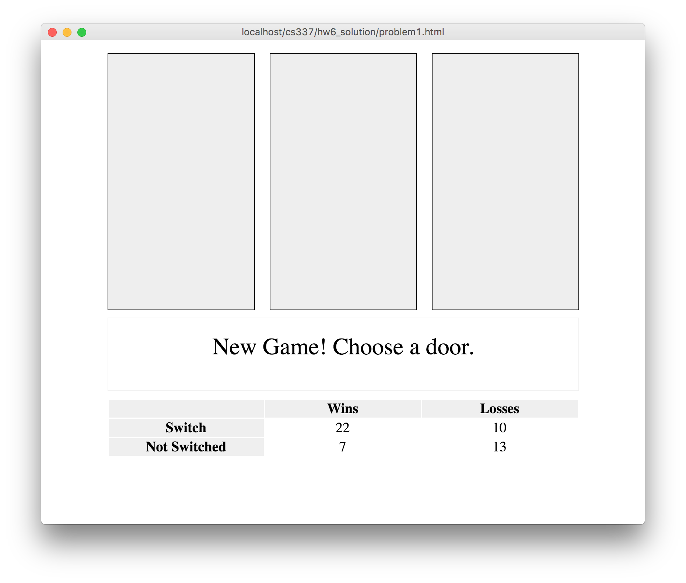
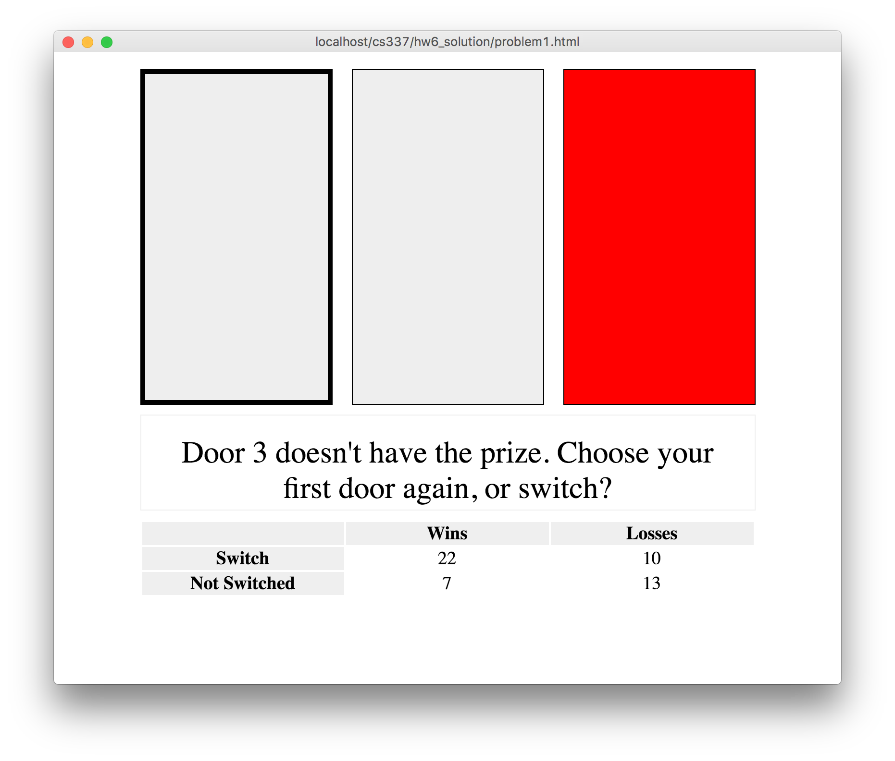
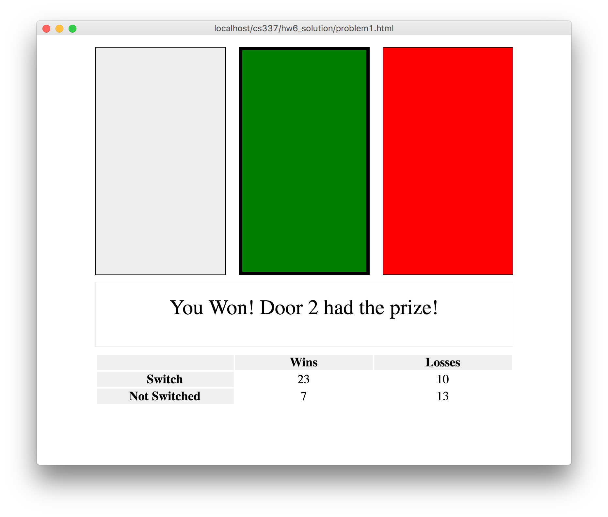

The API documentation for the Monty Hall web service is here: API Documentation. Reading and understanding this API will be critical to success in this assignment.
Problem 1: Monty Hall Front-End (100 points)
The remaining two assignments for the semester have you implement a client-server AJAX based web application to play the Monty Hall game. If you're not familiar with this problem, or want a deeper dive into it, see the WikiPedia article for it: https://en.wikipedia.org/wiki/Monty_Hall_problem.
The basics of the game work like this:
The Player is presented with 3 closed doors. There is a prize behind one of the doors.
The Player first selects one door, but does not open it.
The Host then opens one of the doors the Player did not choose. The Host will always open a door with no prize behind it.
The Player is then given a final choice: stick with the original door the player selected, or switch their choice to the other door that the Host did not open.
Finally the Host reveals the door containing the prize, and the Player either wins or looses.
For this assignment you will create a web page front-end for the Monty Hall problem. The front-end communicates via the AJAX technique with a back-end API. For this first part, I have implemented a reference API back-end you can all use to test your front-ends against.
For assignment 7, you will implement the PHP/MySQL based back-end API.
Minimum Requirements
You will have 3 main components to your web page:
3 Doors to click on
A message box to display messages to the Player
A table of win/loss stats
Door behavior:
When you click on a door to select it, you will need to indicate that it is selected in some way.
When the incorrect door is 'opened', indicate that the door is incorrect somehow.
When the final prize door is 'opened' indicate that that door held the prize somehow.

Initial Page load, showing a new game - Click for larger view

After clicking on a door, and an incorrect door being opened - Click for larger view

End of the game - Click for larger view
Message Box behavior. There are three required messages that should be displayed. The door number printed to the Player should not be zero indexed. So the first door should be door 1, and the last door should be door 3. Only convert door indexes when displaying door numbers to the Player.
New Game! Choose a door.
Door 2 doesn't have the prize. Choose your first door again, or switch?
Win/Loose:
You Won! Door 1 had the prize!
You Lost. Door 1 had the prize.
Stats Table
Table should show stats at the beginning of the game
Stats should be updated when the game is over
Extra Credit (5 points)
Five points of extra credit are available if you choose to make the game look better. Ideas include, but are not limited to:
Make doors look more like doors
Animate door openings
Have something behind the prize door
Have something behind the incorrect doors
Make the front-end page mobile-responsive (indicate this in your submission so we test it)
... other ideas?
Homework Submission
You should create a folder holding your files, and zip it up for submission. Name your folder and zip file something descriptive like Your-Name-HW6.zip. Please make a folder with your files in it, and zip up the folder. Do not select all the files and zip them up. Your name is not Mark Fischer (that's my name!). :)
File List
problem1.html
problem1.js
problem1.css
Homeworks Zip files will be submitted to D2L, in the "Assignment 6" dropbox.
{kind=link}
{kind=link}
{kind=link}